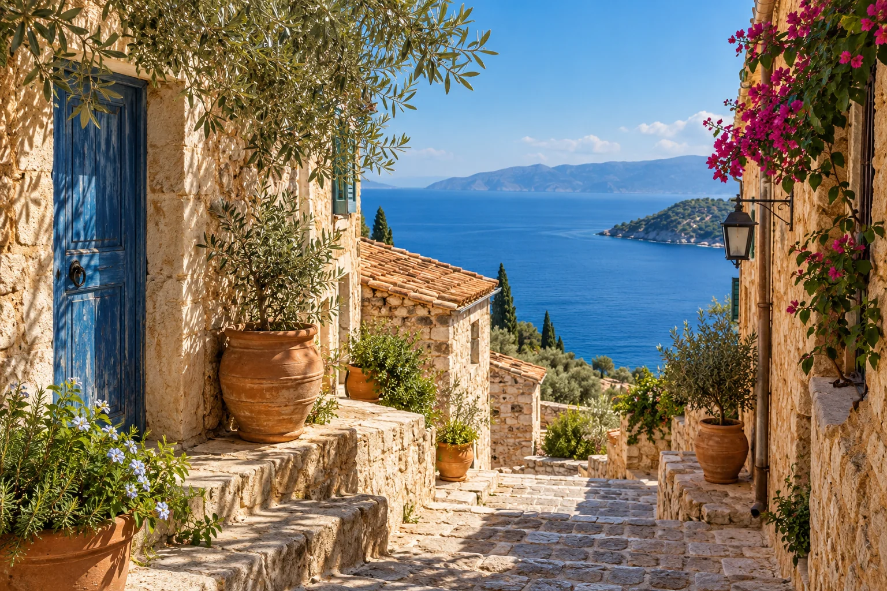
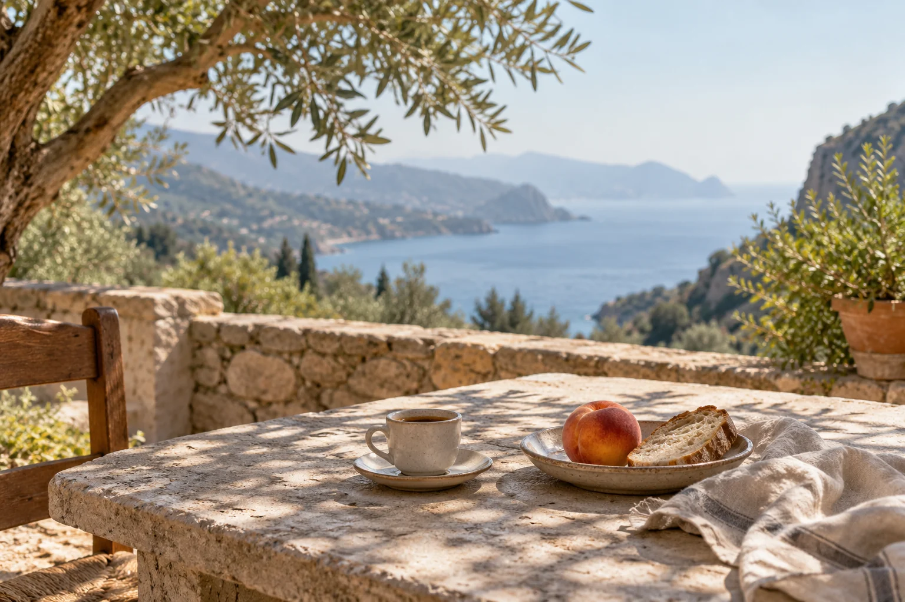

Considered journeys for independent travelers
Leave room
for elsewhere.
A few meaningful places.
A route that makes sense.
An
afternoon with nothing to prove.

The trip is not
the list of places.
It is how you feel moving between them. Experience Elsewhere is a planning concept for people who want a personal route, practical context, and a little room to follow their curiosity.
Put the bags down.
Find your bearings.
Arrival already has a rhythm of its own. Allow for the transfer, a meal and a short wander. The first day does not need to win the trip.
A town base gives the first days a familiar point of return.
One neighborhood.
A favorite corner.
A place to return
to.

Keep one
afternoon
unclaimed.
For the long lunch. The unexpected lane. Or simply the pleasure of staying still.
A good plan holds useful alternatives. It does not turn every hour into an obligation.
Six days.
How would you spend them?
A fictional pacing study, not a bookable itinerary. Two bases, one transfer, and room for weather, energy and discovery.
-
DAY 01
Arrive & settle
A short wander. An easy first evening.
TOWN BASE -
DAY 02
Follow your curiosity
One neighborhood, then an open afternoon.
TOWN BASE -
DAY 03
One meaningful anchor
A cultural or food interest, if the details fit.
TOWN BASE -
DAY 04
Move once
Allow time for the transfer and a quiet arrival.
COASTAL BASE -
DAY 05
A different horizon
A local walk with a weather alternative.
COASTAL BASE -
DAY 06
Leave with space
Keep the departure day simple.
DEPARTURE
A little more exploring: a few considered anchors, with an open afternoon and a single change of base.
No specific destination, travel time, accommodation, opening schedule or supplier availability is established by this example.
Inspiration,
with the practical
parts considered.
The proposed first service would plan a 5–7 day independent trip in one region. A considered route, a personal shortlist, and a checklist of details to verify before booking directly.
- Why this place?
- A reason for each anchor, with alternatives that suit your interests.
- Will the day work?
- Travel days, access preferences, time on your feet and unstructured space.
- What needs checking?
- Current sources for prices, availability, transport, access and cancellation terms.
You verify and book directly with providers. No reservations, payments or live inventory are handled here.
What does your
elsewhere
feel like?
Begin with your rhythm and interests. We’ll help you put the idea into words for a conversation about the proposed planning pilot.
The coastal scenes are imagined, not inspected locations or promised views. Pilot scope and availability remain in development.
Before the journey.
Can I book a trip here?
No. The initial concept is planning only. You verify current information, make bookings directly and retain contracts and confirmations with the relevant providers.
Are the coastal scenes verified destinations?
No. They are labeled AI-generated concept images, used for atmosphere. No named accommodation, inspected location or bookable experience is shown.
What would happen after an inquiry?
A conversation would establish whether a suitable planning pilot is available. Any engagement, scope, fee and handling of personal information would need to be agreed separately.